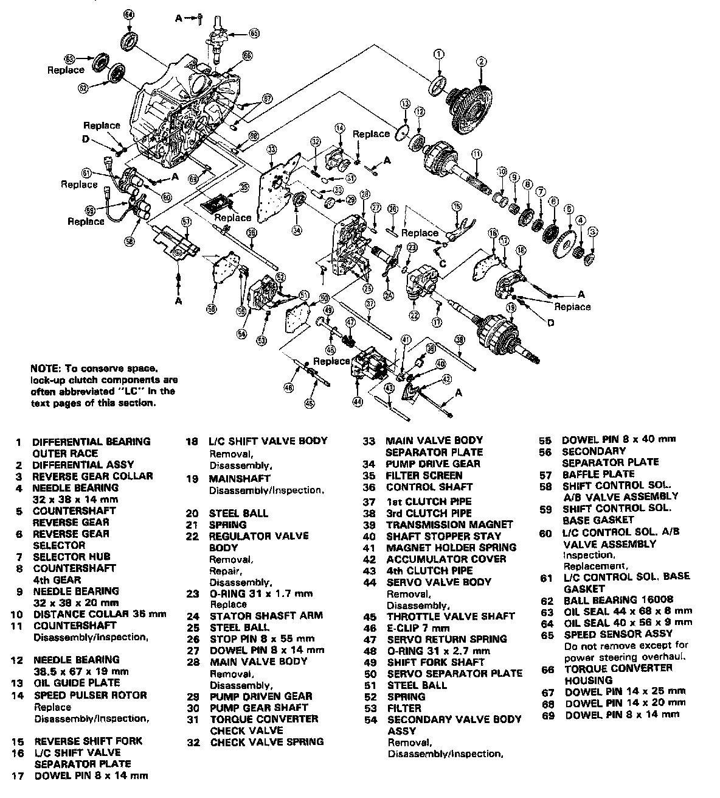
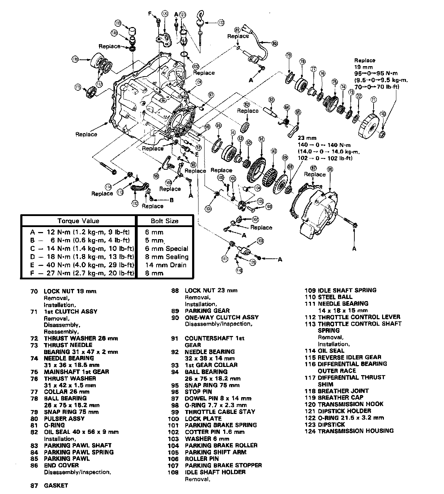
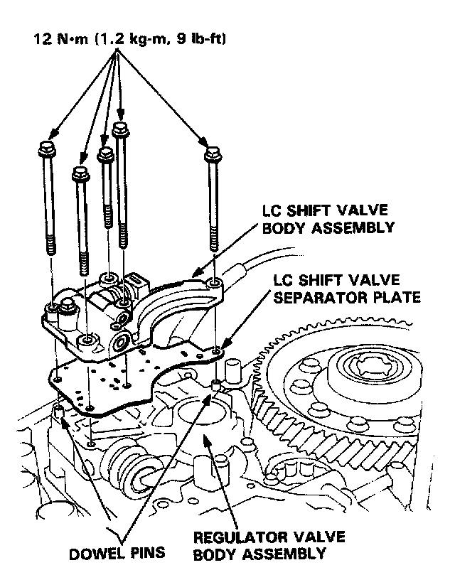
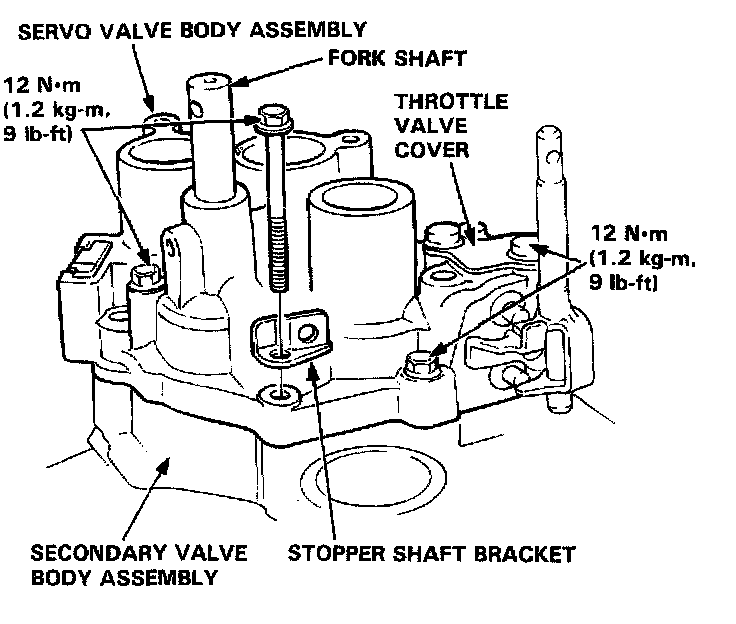
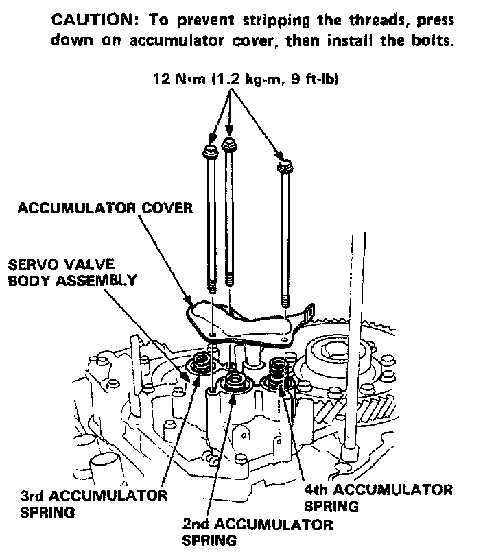
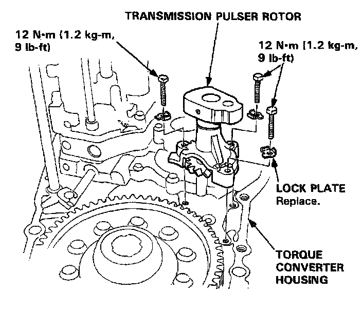
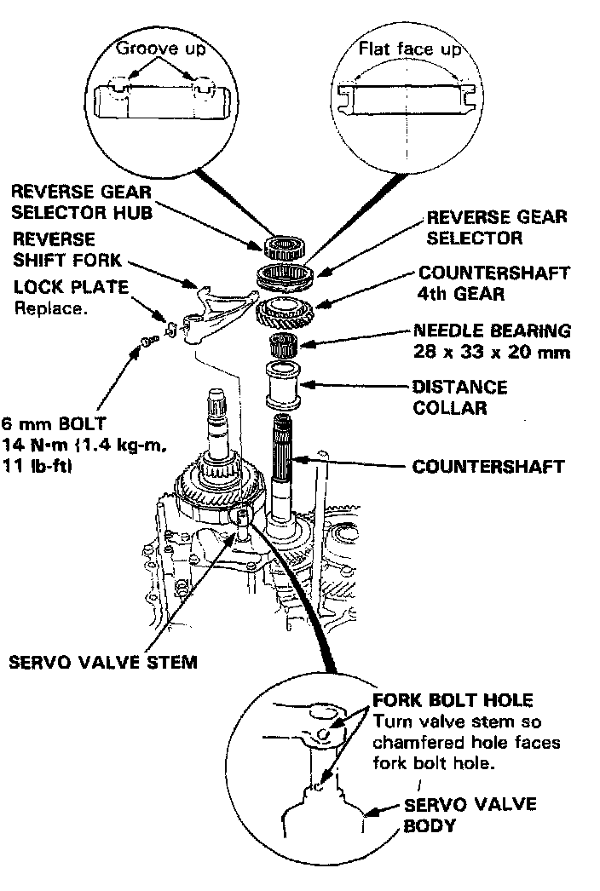
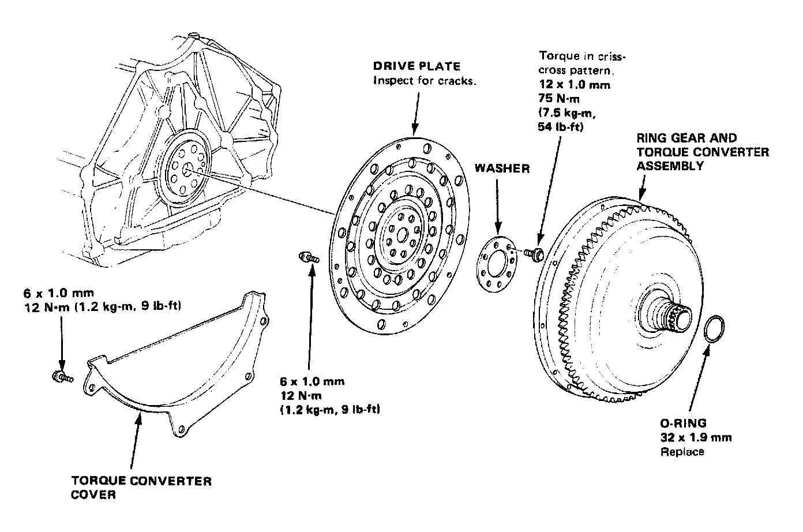

Transmission Assembly
L5 4-spd A/T, Assembly Torque 1 Of 2:

L5 5-spd A/T, Assembly Torque 2 Of 2:

L5 4-spd A/T, Lock-up Shift Valve Body Assembly:

L5 4-spd A/T, Servo Valve Body Assembly:

L5 4-spd A/T, Accumulator Cover Torque:

L5 4-spd A/T, Transmission Pulser Rotor:

L5 4-spd A/T, Reverse Shift Fork Lock Plate Bolt:

L5 4-spd A/T, Torque Converter Assembly:
